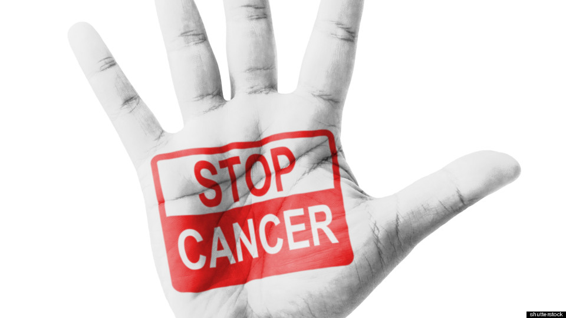

Секој канцер кој ќе се открие благовремено сигурно се лечи. Но, во над 80% од случаите во клиничката пракса канцерот се открива од две ипол до три години по канцерогенезата, односно во времето кога ќе се почуствуваат слабите канцерски болки. За да знаеме кога е „благовремено“ секој мора да го слуша своето тело и јасните „сигнали“ кои телото му ги испраќа. За жал, голем број канцерозаболени не ги „читаат“ сигналите или ги игнорираат. Кои може да се сигналите на почетна канцерогенеза
*Умор-Всушност канцерскиот умор се состои од сериозност и истрајност, намалена ментална концентрација со физички слабости во мускули, намалена мотивација или интерес за учество во вообичаени активности и намалување на изведбата на потребните или полезните активности. Секој ден или речиси секој ден во период од две недели симптомите се: општа слабост или тежина во екстремитетите, спиење кое не освежува и не враќа енергија, потешкотија во завршување на секојдневните задачи која се припишува на чувството на умор со забележлива емоционална реакција како тага, фрустрација или раздразливост, слабости по физички напор која трае неколку часа и забележани проблеми во краткорочната меморија
*Емоционална состојба Енергетскиот дисбаланс и наведените критериуми поврзани со канцерогенезата резултираат забележиви емоционални реакции како што е тага, раздразливост и фрустрации. Емоционално и психичко нарушување и за пациентот и за членовите на семејството со намалена ментална концентрација и чести емоционални испади понекогаш одат во прилог на канцерогенезата.
*Скрининг- Постојат алтернативни методи како например информодиагностиката, која нуди комплетен и неинвазивен 30 минутен скрининг на целото тело. Овој метод во комбинација со ЕлектроПунктурното мерење вели дека може да се измери промена на клеточен потенцијал далеку пред појава на првите клинички симптоми при што е возможна дијагноза на канцерогенеза и предиспозициите за канцер во најрани стадиуми. Скопје исто е еден од градовите во светот каде што се повеќе се популаризира Информодијагностиката и ЕлектроПунктурното мерење